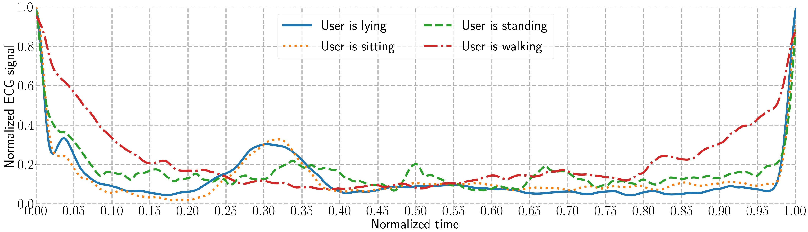
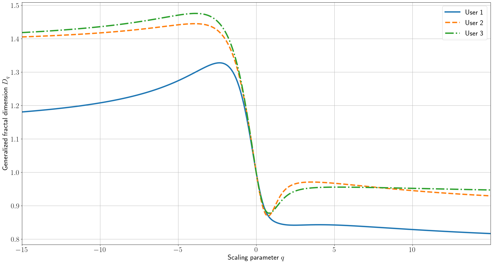
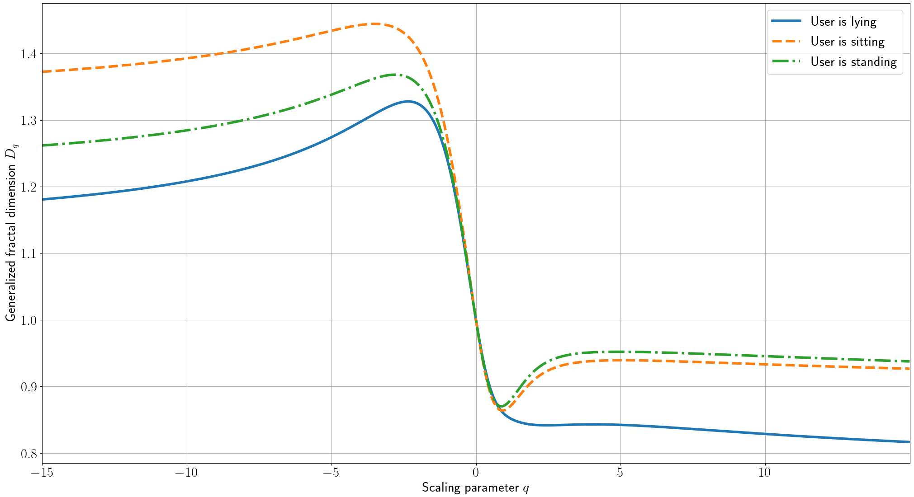
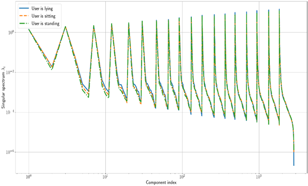
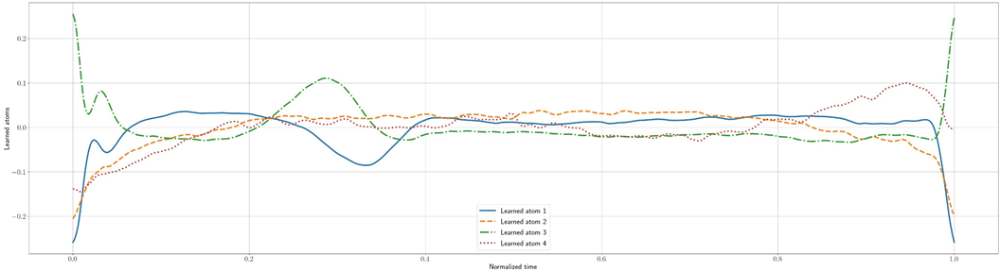

Heartbeat-Based Authentication on Smartwatches
Seventeenth Symposium on Usable Privacy and Security, SOUPS 2021
Who Are You?! Adventures in Authentication Workshop, WAY-2021, Vancouver, B.C., Canada, August 11-13, 2021
Abstract
Today wearable devices, such as smartwatches, become significant part of our life.
In spite of rich functionality, computational and device geometry constraints limit
the possibility of their usage for strong user-friendly authentication,
such as fingerprint or face recognition. Thus, the physiology and behavior based solutions
have taken a special interest in last years.
Emergence of high-precision sensors for electrocardiogram signals tracking on smartwatches made heartbeat authentication technology an attractive candidate for on-device user authentication. The companies provided advanced solutions for user authentication by heartbeat signals are presented below.
Nevertheless, proposed solutions for heartbeat signals based user authentication is focused
on a single usage context, that may be inappropriate for mass-market products. Thus a suitable
alternative is needed for on-device sensitive information processing in any usage context.

We proposed to use an innovative component analysis methods to address these issues by applying
less resource-intensive algorithms. The considered methods include multifractal analysis (MFA),
singular spectrum analysis (SSA), and dictionary learning methods. They provide compact (learned)
representation of heterogeneous signals at low computation complexity of signal decomposition procedure.
The MFA is aimed at evaluating statistical parameters of heterogeneous signals (multifractals) that provide
local power law dependency of adjacency elements values with singularity exponent h(t). The MFA allows for analysing
the fine structure of signal by its decomposition at different time scale. The example of obtained generalized fractal dimensions
spectrum Dq
for different users and various usage contexts are presented below.


In contrast to MFA, Singular Spectrum Analysis (SSA) method is aimed at decomposing of a signal (time series)
into a sum of series, so that each component can be identified as either a trend, periodic or quasi-periodic
component, or a noise. Analysis of extracted components allows for selecting appropriate components
to be used as features during user authentication. Example of estimated SSA spectrum for heartbeat signals
gathered for a single user in various usage contexts are shown below.

Nevertheless, these components should be manually selected, which may be inappropriate in real applications.
Therefore it can be useful for decomposition methods that “learn” appropriate representation from the signal.
In our research, we used dictionary-learning methods for creating user-specific basis for HBS decomposition.
The main idea is that heartbeat signals of target user may be sparsely represented in learned dictionary,
while signals of another person require much ”denser” representation. The examples of learned atoms for a
single user are presented below.

Considered methods were tested on Samsung Galaxy Watch 3 smartwatch. Evaluation was done for two cases:
heartbeat signals (HBS) captured in fixed (supine) position, and signals collected in various usage contexts.
The first was used to compare the accuracy against the existing state-of-the-art. The second one
allows for evaluating performance metrics during real-life activities such as sitting, still standing and walking.
Obtained multifractal spectrum, SSA spectrum and decomposition coefficients in learned dictionary were used as features
for HBS classification during user authentication. Proposed solution was compared with state-of-the-art Discrete
Wavelet Transform (DWT) based method proposed by Enamamu et al.
The Enamamu’s solution uses statistical parameters of DWT coefficients for ECG-signals as features during user
authentication. Heartbeat signals features were extracted using well-known wavelet bases, such as Daubechies,
biorthogonal, Meyer to name a few.
The examples of HBS for fixed (supine) position were taken from publicly available datasets found in PhysioNet
service:
- Combined measurements of ECG, Breathing and Seismocardiograms – the dataset includes measurements of 20 presumably healthy volunteers. Approximately, 867 signals per-user were captured.
- Wilson Central Terminal ECG Database – the dataset includes ECG signals recorded from 92 patients (14 signal-per-user on average) with I – III Leads.
- The in-house dataset - includes ECG-signals captured with Samsung Galaxy Watch 3 by presumably healthy volunteers (25 logs-per-user with 30 heartbeat-per-log on average) in widespread usage contexts (during lying, sitting, still standing and walking).
The estimated FAR and FRR values for considered signal transformation methods and state-of-the-art Enamamu’s solutions are presented below.
| Dataset | Used features | FAR, % | FRR, % |
|
Wilson Central Terminal ECG Database |
Multifractal analysis | 4.97 | 8.16 |
| Singular spectrum analysis | 0.08 | 11.95 | |
| Dictionary learning | 70.95 | 6.33 | |
| Enamamu’s solution | 3.61 | 2.08 | |
|
Combined measurements of ECG, Breathing and Seismo- |
Multifractal analysis | 0.03 | 1.77 |
| Singular spectrum analysis | 0.01 | 0.68 | |
| Dictionary learning | 0.42 | 51.62 | |
| Enamamu’s solution | 0.01 | 0.77 |
Note large values of FAR (FAR ~ 0.5%) and FRR (FRR~ 50%) metrics for Dictionary Learning method in comparison with other methods.
This can be explained by high similarity of captured HBS that leads to high similarity of learned dictionaries A for users.
On the other hand, MFA and SSA methods allow for achieving authentication accuracy on open datasets that is close to
the state-of-the-art Enamamu’s solution.
Also, False Acceptance Rate and False Rejection Rate were calculated by using HBS captured for various
usage contexts (user’s physical activities). Evaluated metrics for considered signal processing methods and Enamamu’s
solution are presented in the next table.
| Dataset | Used features | FAR | FRR |
| Users are lying | Multifractal analysis | 2.66 | 39.90 |
| Singular spectrum analysis | 5.49 | 28.06 | |
| Dictionary learning | 0.21 | 60.95 | |
| Enamamu’s solution | 1.76 | 22.15 | |
| Users are sitting | Multifractal analysis | 2.14 | 30.28 |
| Singular spectrum analysis | 4.12 | 20.53 | |
| Dictionary learning | 2.68 | 58.62 | |
| Enamamu’s solution | 0.95 | 18.79 | |
| Users are standing | Multifractal analysis | 6.54 | 29.51 |
| Singular spectrum analysis | 3.61 | 17.95 | |
| Dictionary learning | 0.56 | 63.06 | |
| Enamamu’s solution | 0.88 | 14.25 | |
| Users are waling | Multifractal analysis | 34.69 | 20.50 |
| Singular spectrum analysis | 7.70 | 36.98 | |
| Dictionary learning | 3.41 | 76.66 | |
| Enamamu’s solution | 2.03 | 45.37 |
Using Dictionary Learning techniques leads to considerable increase of FRR values (up to 76%)
by preserving FAR values close to state-of-the-art solutions. Usage of multifractal and singular spectrum
analyses allowed to achieve close to Enamamu’s method authentication accuracy.
Evaluation results showed that proposed processing
pipelines, based on multifractal analysis and singular spectrum analysis, achieved close to state-of-the-art Enamamu’s
accuracy (0.01% False Acceptance Rate and 0.77% False Rejection Rate), and outperformed it in various usage contexts.
Obtained results confirm the effectiveness of using specialized signal processing methods for heartbeat authentication
on constrained devices such as wearables.